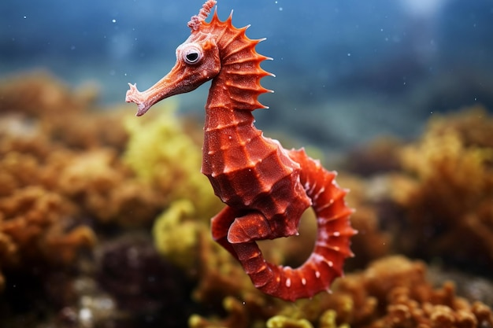

Inicio
Esta es una plantilla para usarse como base de otras plantillas, aquí puedes encontrar información de los animales exóticos, vehículos antiguos y las 7 maravillas del mundo.


Animales exóticos
El reino animal es único ya que se caracterizan por ser multicelulares, eucariotas y heterótrofos; a continuación se muestra información de algunos de esos animales.
Caballito de mar
Los hippocampos o caballitos de mar son peces marinos con forma de caballo, que se alimentan de zooplancton y se reproducen por ovoviviparidad.
